Welcome! You're about to take a test on Lab in the Wild.
What are your problem-solving superpowers? How do you approach complex strategic problems?
Try to solve a difficult puzzle to find out.
Find out for yourself and compare your performance to others!
This test typically takes 15 minutes to complete
This study requires a laptop or a tablet. It will not work on a phone.
The test may also not work properly on older versions of Internet Explorer.
We apologize for not being able to support all browsers.
Tell your friends about this test!
Thank you for participating in our study! Here's some information about your problem-solving strategy
and how it compares to others.
Your strategic problem solving reminds us of Superman: you were able to overcome the challenge of a
very difficult problem and win the game.
Your strategic problem solving reminds us of Wonder Woman:
you played the game in a unique way which
differed from most of our participants.
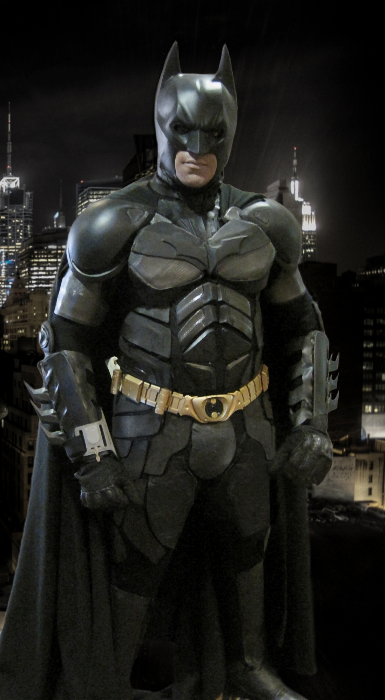
Your strategic problem solving reminds us of Batman: your problem-solving strategy was characterized
by deep exploration of alternative game plays.
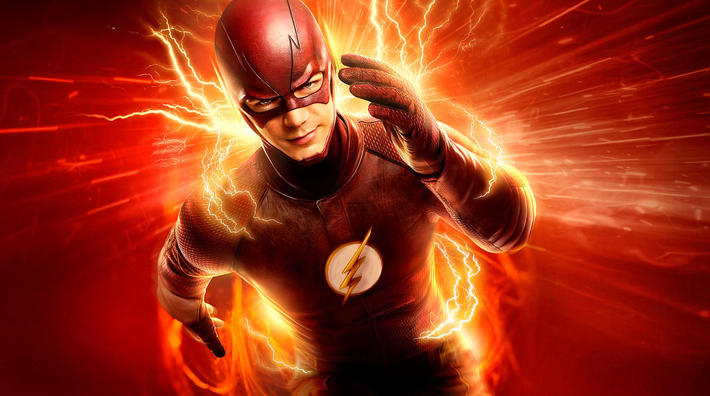
Your strategic problem solving reminds us of Flash: your problem-solving strategy was characterized
by a fast exploration of game plays.
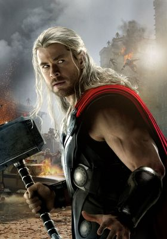
Your strategic problem solving reminds us of Thor: your problem-solving strategy was characterized
by a slow and thoughtful exploration of game plays.
Your solution was correct! Good job, only 20%%
of participants solved this problem correctly.
Your solution was incorrect. But don't be disappointed, only 20%%
of participants solved this problem correctly.
You spent minutes working on this problem.
This is times faster than the average participant.
Wait, there's more!
In this study, we are looking at the way in which people solve complex problems such as the one you were
presented with.
When solving the problem, you considered 20 moves
(this means that you clicked on squares in the tic-tac-toe board 20 times).
The average number of moves participants in our study considered is 15.
Compared to others, your problem-solving strategy was more spread.
This means that you alternated between game paths that cover different parts of the game board.
Compared to others, your problem-solving strategy was more focused. This means that you tried
alternative game paths that were close to each other.
Your problem-solving strategy was balanced. This means that you explored some parts of the
game board in depth, testing different responses of the players, while also exploring alternative
game paths that covered different parts of the game board.
Here's a comparison between how you solved the problem and how others did:
The image on the left shows the number of times different players placed an X on each square.
On the right image, we show the number of times you placed an X on each square.
Darker Red means many clicks, Darker Blue means a small number of clicks.
By looking at these two images, you can compare your way of playing vs. all the other participants in the study.
It's time to show your tic-tac-toe expertise to others! Share this test with your friends so they can discover their strategic superpowers as well.
Want to learn more about yourself? Check out other tests on Lab in the Wild!
Consent
Please consider this information carefully before deciding whether to accept this task.
TITLE OF RESEARCH: Problem demonstrability as pruning of the solution space.
PURPOSE OF RESEARCH: To examine problem solving performance.
WHAT YOU WILL DO: You will be asked to solve a Tic-tac-toe game problem.
TIME REQUIRED: Participation will take approximately 15-20 minutes.
RISKS: There are no anticipated risks associated with participating in this study. The effects of participating should be comparable to those you would experience from viewing a computer monitor for 20 minutes and using a mouse.
CONFIDENTIALITY: Your participation in this study will remain confidential. Your responses will be assigned a code number.
You will NOT be asked to provide your name. You will be asked to provide your age and gender (optional).
Throughout the experiment, we may collect data such as browser type, operating system version, mouse movements, and error rates.
The records of this study will be kept private.
Research records will be kept in a locked file; only the researchers will have access to the records.
PARTICIPATION AND WITHDRAWAL: Your participation in this study is voluntarily, and you may withdraw at any time by closing the web page of the task.
CONTACT: This study is conducted by researchers at the Technion - Israel Institute of Technology.
If you have any questions or concerns about this study, please contact oamir@technion.ac.il.
CONSENT: I have read the above information and the nature and purpose of this research have been sufficiently explained. I consent to take part in the study.
I understand that I am free to withdraw at any time.
I agree and will participate in this study.
Please tell us a bit about yourself.
These questions are optional, but they will help us with data
analysis. Note that none of the answers are personally identifiable.
Have you taken this test before?
How old are you?
What is your gender?
What is the highest level of education you have received or are pursuing?
What is your chess expertise?
A couple of quick questions before we show you your results:
Have you taken this test before?
Did you experience any technical difficulties?
Did you cheat in any way?
Were you distracted during the test?
Anything else we should know?
Instructions - Tic-tac-toe
In this task you will play a version of the game Tic-tac-toe, your goal will be to find the best move given a starting position.
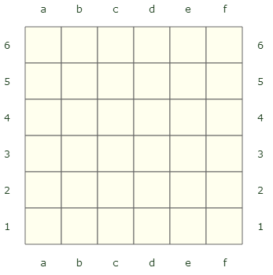
This version of the game Tic-tac-toe is played on a 6x6 board as displayed on the right. Please read the instructions carefully; there will be a quiz on the next step.
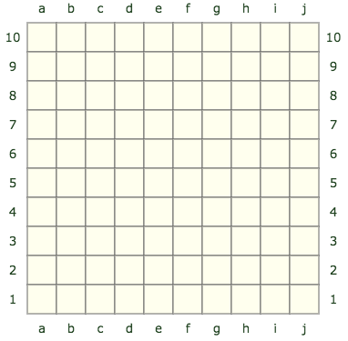
This version of the game Tic-tac-toe is played on a 10x10 board as displayed on the right. Please read the instructions carefully; there will be a quiz on the next step.
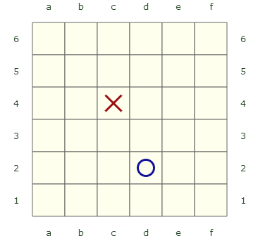
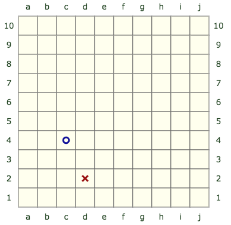
Two players, X and O, take turns marking the spaces on the board.
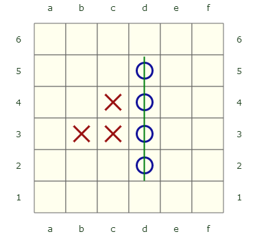
The player who succeeds in marking four neighboring spaces in a horizontal, vertical, or diagonal row wins the game.
In the image on the right, O won the game by marking four spaces vertically.
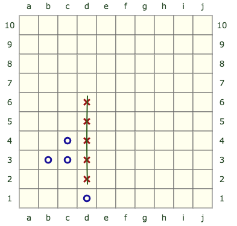
The player who succeeds in marking five neighboring spaces in a horizontal, vertical, or diagonal row wins the game.
In the image on the right, X won the game by marking five spaces vertically.
In this image X won by marking four spaces diagonally.
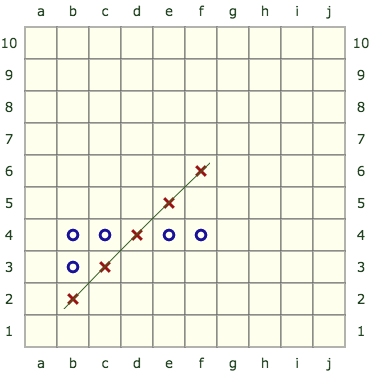
In this image X won by marking five spaces diagonally.
Please answer the following questions:
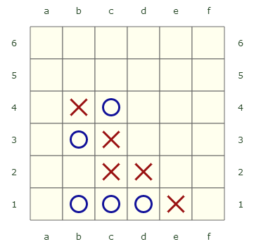
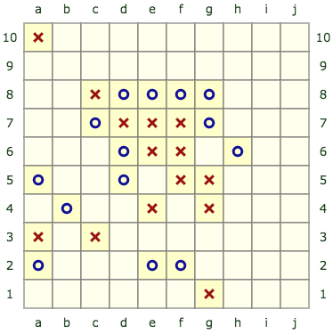
Who won?
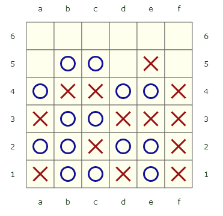
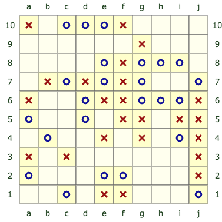
Who won?
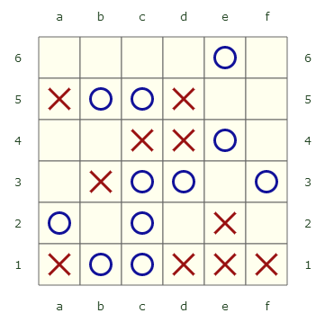
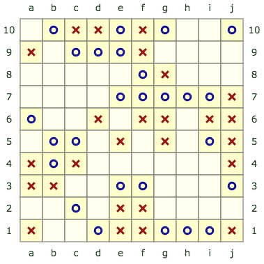
Who won?
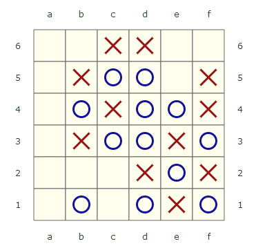
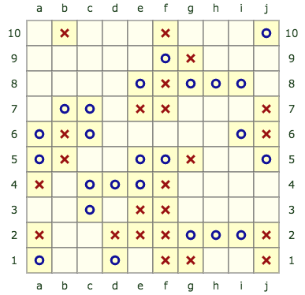
X can win in one move. What is the move?
example: a1
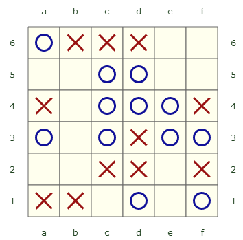
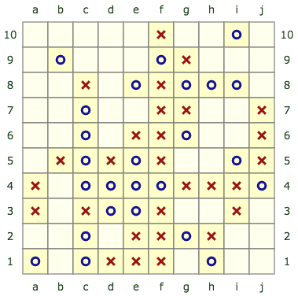
O can win in one move. What is the move?
example: a1
Your task will be to find the winning move for X, such that
X wins no matter what the O player does. Below is an example, please read it carefully.
Your task will be to determine whether a certain move that X makes will guarantee that
X wins no matter what the O player does. Below is an example, please read it carefully.
When solving the problem, you will be able to use an interactive board (like the one below) to try different strategies.
When you click a square, an X or an O will appear
(depending on who's turn it is).
You will need to make moves for both players when trying
out strategies. Both players should play as best as they can and try to win,
so you will need to try to make the
best moves you can for
both X and O.
It is X's turn to play. In this position, X can force a win in 2 turns.
This means that X can win the game by placing 2 more marks,
even when the O player plays as best as possible to win as well.
In this example, X can guarantee a win by playing b3.
After that, no matter what move O will make, X will still win. For example,
if O plays e3, X will play a3 and win, and if O plays a3, X will play e3 and win. Note that O
cannot threaten X in any other position, so O will surely lose this game.
Use the board to verify that X will indeed ensure a win in two moves by playing b3.
In the real task you will also be able to use an interactive board like this one. Please use it (and not pen and paper), because we want to see how people solve such problems. Each X move you play will show the move number so you can easily count how
many moves you've played.
It is X's turn to play. In this position, X can force a win in 2 turns.
This means that X can win the game by placing 2 more marks,
even when the O player plays as best as possible to win as well.
In this example, X can guarantee a win by playing b3 (square with thick boarder).
After that, no matter what move O will make, X will still win. For example,
if O plays e3, X will play a3 and win, and if O plays a3, X will play e3 and win. Note that O
cannot threaten X in any other position, so O will surely lose this game.
Use the board to verify that X will indeed ensure a win in two moves by playing b3.
In the real task you will also be able to use an interactive board like this one. Please use it (and not pen and paper), because we want to see how people solve such problems. Each X move you play will show the move number so you can easily count how
many moves you've played.
It is X's turn to play. In this position, X can force a win in 2 turns.
This means that X can win the game by placing 2 more marks,
even when the O player plays as best as psossible to win as well.
In this example, X can guarantee a win by playing b3.
After that, no matter what move O will make, X will still win. For example,
if O plays f3, X will play a3 and win, and if O plays a3, X will play f3 and win. Note that O
cannot threaten X in any other position, so O will surely lose this game.
Use the board to verify that X will indeed ensure a win in two moves by playing b3.
In the real task you will also be able to use an interactive board like this one. Please use it (and not pen and paper), because we want to see how people solve such problems. Each X move you play will show the move number so you can easily count how
many moves you've played.
It is X's turn to play. In this position, X can force a win in 2 turns.
This means that X can win the game by placing 2 more marks,
even when the O player plays as best as psossible to win as well.
In this example, X can guarantee a win by playing b3 (square with thick boarder).
After that, no matter what move O will make, X will still win. For example,
if O plays f3, X will play a3 and win, and if O plays a3, X will play f3 and win. Note that O
cannot threaten X in any other position, so O will surely lose this game.
Use the board to verify that X will indeed ensure a win in two moves by playing b3.
In the real task you will also be able to use an interactive board like this one. Please use it (and not pen and paper), because we want to see how people solve such problems. Each X move you play will show the move number so you can easily count how
many moves you've played.
First move to ensure a win for X is:
Is b3 a winning move for X:
Please briefly explain the strategy you used to solve the problem:
Find the winning move for O, such that O
wins no matter what O does.
Note that to win, a player needs to have 4 consecutive marks
(row, column or diagonal).
If you answer correctly, you will be asked to play the game against the computer, so try to
remember the moves you make.
You have 10 minutes to solve the problem. A timer is shown below.
Is d6 a winning move for O?.
Note that to win, a player needs to have 4 consecutive marks
(row, column or diagonal).
After you submit your answer, you will be asked to explain your strategy and play the game against the computer, so try to
remember the moves you make.
You have 10 minutes to solve the problem. A timer is shown below.
Good job, the first move you've chosen is correct!
To see if the rest of your solution is correct, play the game against O.
This time, when you use the board, the computer will be
making the moves for O.
Click continue once you think you've won the game. You'll have 3 minutes to complete this stage.
You cannot undo a single move at this stage, but you can reset the game to start over.
Time left:
Time left:
In this position O can force a win in 4 turns.
This means that O can win the game by placing 4 more marks,
even when O plays to win as well.
Find O's winning strategy.
Use the board to try out different strategies.
Each X move you play will show the move number so you can easily count how
many moves you've played.
X can win the game in 5 moves no matter what
O does. Is the first move to win the game d6
(square shown with thick black border)?
Assume that both players try their best to win the game.
Use the board to try out different strategies.
Each X move you play will show the move number so you can easily count how
many moves you've played. Note that it is now the turn of the O player (after X played the square shown with
the thick black border).
The board as been reset to its starting position as now you will be playing against the computer.
For your convenience, this is a list of the moves you played on the board when solving the problem
(after the last time you reset the board):
First move to win for O:
Is d6 a winning move for O?:
If you answered "yes", what is the next move that X should play (after f3) to enforce the win? (assume that O responded as best as possible to the f3 move)
If you answered "no", what is the first move O should play to block X from winning?
Your answer:
How confident are you in your solution?
Not at all confident
Very confident
The browser window is too small. Please maximize the browser.
Final Words
You completed this task. Thank you!
Please paste your code back in the amazon turk HIT. You have to paste the code in order to get paid.


 In this image X won by marking four spaces diagonally.
In this image X won by marking four spaces diagonally.